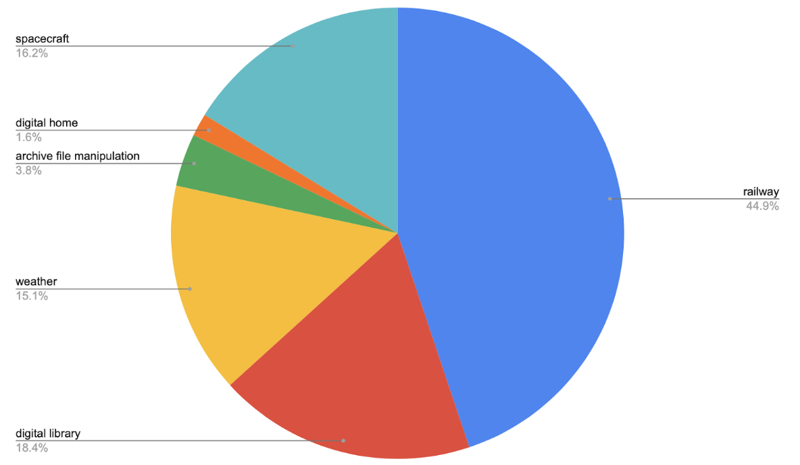

REFSQ2020 Workshop, TBD, Pisa, Italy
Ambiguity is the phenomenon that occurs when a sentence can be interpreted in more than one way. The notion of nocuous ambiguity in requirements specifications was first introduced by Chantree et al. (2006). It is defined as the ambiguity that leads to multiple interpretations by human readers, be it in the form of their disagreement on the interpretation or acknowledgment of multiple possible readings. Having multiple interpretations might lead to misunderstanding the requirements, and thus cause significant implications on the success of the development process.
Detecting nocuous ambiguity in requirements specifications has been applied so far to several ambiguity types such as coordination (Chantree et al., 2006) and referential (Yang et al. 2010, 2011).
Referential ambiguity (also called anaphora ambiguity) occurs when a pronoun is preceded by multiple antecedents. For example, the pronoun "it" in the following sentence, has three syntactically valid antecedents (in bold), although only the latter two are semantically valid:
The procedure shall convert the 24 bit image to an 8 bit image, then display it in a dynamic window.
Detecting and resolving such an example automatically is challenging but necessary for establishing a common understanding on what this requirement means.
While the ambiguity topic is not new from a Computational Linguistics point of view, there is little attention given to the domain specificity of requirements specifications, which in turn makes NLP generic tools less applicable, and requirements-specific solutions less generalizable.
ReqEval 2020 is an attempt to create a benchmark for the requirements engineering community on essential NLP problems that will inspire both researchers and industry practitioners to come up with innovative solutions and build up future directions. Task 1 involves referential ambiguity found in requirements specifications from various domains. The task introduces a dataset of 200 sentences that are manually annotated with being ambiguous or unambiguous.
The dataset is annotated by five annotators with an expertise in Software Engineering and/or Computational Linguistics. A sentence is marked as nocuous if it has an ambiguous referential case acknowledged by at least one of the annotators, or a disagreement on the interpretation of this ambiguity.
The dataset contains 200 sentences, out of which 102 are marked as ambiguous. It consists of 6 domains as described in the figure below. The entire dataset will be split into ⅔ training set and ⅓ test set. The dataset can be downloaded here.
The participants should create a system that is able to solve the task in two folds:
Only the training set will be published before the workshop in CSV format. The annotations of the sentences in the training set will be published in a separate results file where each answer is associated with a unique ID of the corresponding sentence. In order to get a fair evaluation similar to the one that we will conduct using the test set, we will publish evaluators. Evaluators will be implemented in a way that makes them easy to use, ideally taking one results file as an input and producing a corresponding output file that reports the different evaluation metrics on that particular results file. Evaluators will be published shortly after the training set.
The participating systems should return a results file similar to the one provided for the training set. Then, the systems will be evaluated using the test set that will be kept unseen until the workshop date.
For information about the task, please contact us.
For both sub-tasks, the evaluation metrics will be precision and recall, as follows:
In addition, the systems will be evaluated across domains; i.e., having the system built and/or trained on a certain domain, how would it perform on another domain.